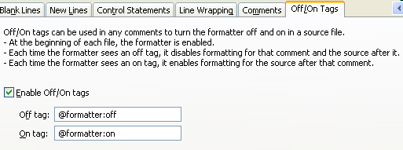

How to turn off the Eclipse code formatter for certain sections of Java code?
I've got some Java code with SQL statements written as Java strings (please no OR/M flamewars, the embedded SQL is what it is - not my decision).
I've broken the SQL statements semantically into several concatenated strings over several lines of code for ease of maintenance. So instead of something like:
String query = "SELECT FOO, BAR, BAZ FROM ABC WHERE BAR > 4";
I have something like:
String query =
"SELECT FOO, BAR, BAZ" +
" FROM ABC " +
" WHERE BAR > 4 ";
This style makes the SQL much easier to read and maintain (IMHO), especially for larger queries. For example, I can put my editor into "overwrite" mode and modify the text in-place fairly easily.
Note that this issue generalizes beyond the particular example of SQL. Any code that is written with any vertical formatting, particularly tabular constructs, is susceptible to destruction by a pretty printer.
Now, some project members use the Eclipse editor and the semantic formatting is often destroyed when they format an entire source file.
Is there a way to instruct Eclipse to ignore certain lines of source with respect to formatting?
I'm looking for something like a special comment that toggles the Eclipse formatter. Ideally, such a comment could be configurable to be whatever we choose, and other formatters could be programmed to respect it as well:
// STOP-ECLIPSE-FORMATTING String query = "SELECT FOO, BAR, BAZ" + " FROM ABC " + " WHERE BAR > 4 "; // START-ECLIPSE-FORMATTING
Obviously, one "solution" is to have our team members standardize on some external formatter like Jalopy or JIndent, but that's not what this question is about (also, not my decision on this project): I'm specifically looking for a way to avoid the Eclipse formatter on an ad-hoc basis.
Ideally, a solution will allow me to insert instructions for the Eclipse
formatter without requiring team members using Eclipse to do any IDE
reconfiguration (other than possibly choosing a formatter agnostic command
comment: STOP-ECLIPSE-FORMATTING → STOP-FORMATTING).
Answer
Eclipse 3.6 allows you to turn off formatting by placing a special comment, like
// @formatter:off ... // @formatter:on
The on/off features have to be turned "on" in Eclipse preferences: Java `` >
``Code Style`` > ``Formatter. Click on Edit, Off/On Tags, enable Enable
Off/On tags.
It's also possible to change the magic strings in the preferences — check out the Eclipse 3.6 docs here.
More Information
Java > Code Style > Formatter > Edit > Off/On Tags
This preference allows you to define one tag to disable and one tag to enable the formatter (see the Off/On Tags tab in your formatter profile):

You also need to enable the flags from Java Formatting
Suggest
AFAIK from Eclipse 3.5 M4 on the formatter has an option "Never Join Lines" which preserves user lines breaks. Maybe that does what you want.
Else there is this ugly hack
String query = //
"SELECT FOO, BAR, BAZ" + //
" FROM ABC" + //
" WHERE BAR > 4";